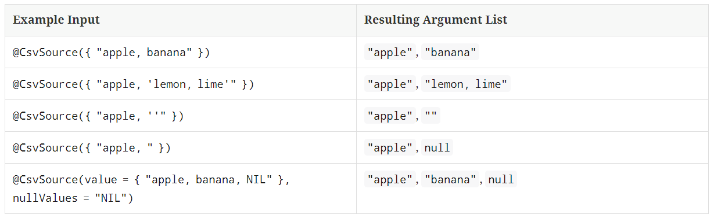
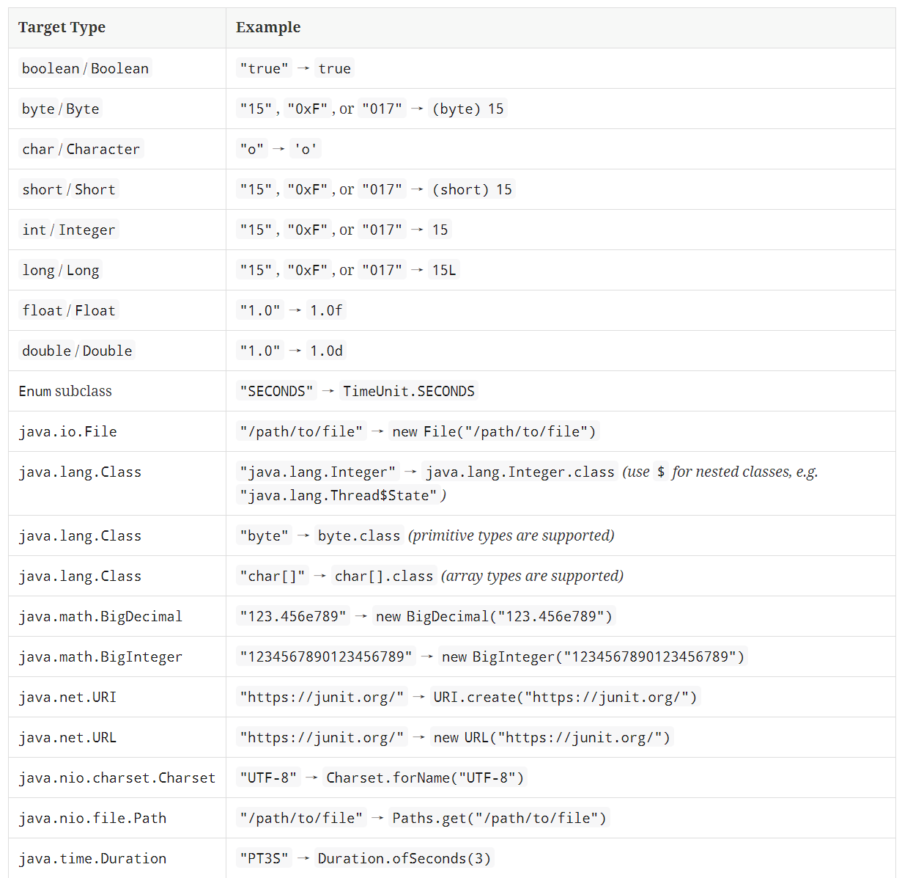
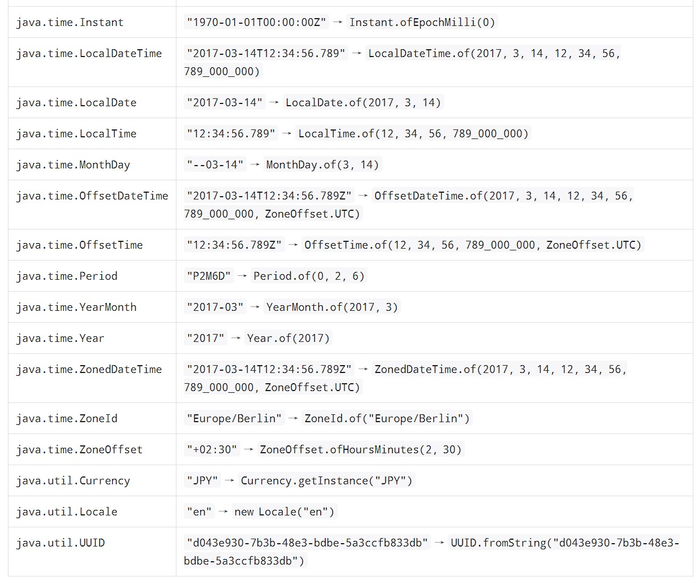
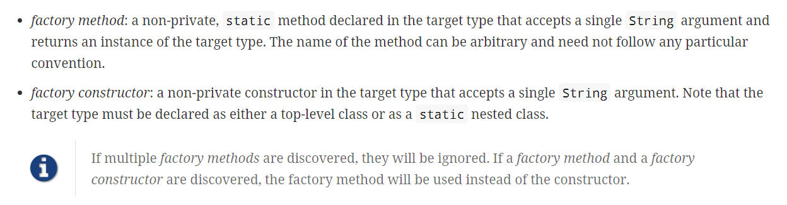
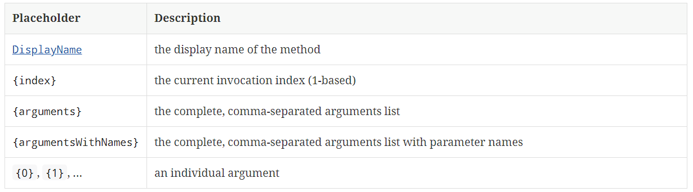

JUnit5参数化测试的几种方式¶

参数化测试一直是津津乐道的话题，我们都知道JMeter有四种参数化方式：用户自定义变量、用户参数、CSV文件、函数助手，那么JUnit5有哪些参数化测试的方式呢？
依赖¶
JUnit5需要添加junit-jupiter-params依赖才能使用参数化：
<dependency>
<groupId>org.junit.jupiter</groupId>
<artifactId>junit-jupiter-params</artifactId>
<version>5.7.2</version>
<scope>test</scope>
</dependency>
简单示例¶
@ParameterizedTest用来定义参数化测试，@ValueSource用来定义参数值：
@ParameterizedTest
@ValueSource(strings = { "racecar", "radar", "able was I ere I saw elba" })
void palindromes(String candidate) {
assertTrue(StringUtils.isPalindrome(candidate));
}
执行结果：
palindromes(String) ✔
├─ [1] candidate=racecar ✔
├─ [2] candidate=radar ✔
└─ [3] candidate=able was I ere I saw elba ✔
参数值会匹配测试方法的参数列表，然后依次赋值，这里一共产生了3个测试。
七种方式¶
1 @ValueSource¶
@ValueSource是最简单的参数化方式，它是一个数组，支持以下数据类型：
shortbyteintlongfloatdoublecharbooleanjava.lang.Stringjava.lang.Class
示例：
@ParameterizedTest
@ValueSource(ints = { 1, 2, 3 })
void testWithValueSource(int argument) {
assertTrue(argument > 0 && argument < 4);
}
2 Null and Empty Sources¶
@NullSource值为null不能用在基元类型的测试方法。
@EmptySource值为空，根据测试方法的参数类决定数据类型，支持java.lang.String,java.util.List,java.util.Set,java.util.Map, 基元类型数组 (int[],char[][]等), 对象数组 (String[],Integer[][]等)@NullAndEmptySource结合了前面两个
示例：
@ParameterizedTest
@NullSource
@EmptySource
@ValueSource(strings = { " ", " ", "\t", "\n" })
void nullEmptyAndBlankStrings(String text) {
assertTrue(text == null || text.trim().isEmpty());
}
等价于：
@ParameterizedTest
@NullAndEmptySource
@ValueSource(strings = { " ", " ", "\t", "\n" })
void nullEmptyAndBlankStrings(String text) {
assertTrue(text == null || text.trim().isEmpty());
}
3 @EnumSource¶
参数化的值为枚举类型。
示例：
@ParameterizedTest
@EnumSource
void testWithEnumSourceWithAutoDetection(ChronoUnit unit) {
assertNotNull(unit);
}
其中的ChronoUnit是个日期枚举类。
ChronoUnit是接口TemporalUnit的实现类，如果测试方法的参数为TemporalUnit，那么需要给@EnumSource加上值：
@ParameterizedTest
@EnumSource(ChronoUnit.class)
void testWithEnumSource(TemporalUnit unit) {
assertNotNull(unit);
}
因为JUnit5规定了@EnumSource的默认值的类型必须是枚举类型。
names属性用来指定使用哪些特定的枚举值：
@ParameterizedTest
@EnumSource(names = { "DAYS", "HOURS" })
void testWithEnumSourceInclude(ChronoUnit unit) {
assertTrue(EnumSet.of(ChronoUnit.DAYS, ChronoUnit.HOURS).contains(unit));
}
mode属性用来指定使用模式，比如排除哪些枚举值：
@ParameterizedTest
@EnumSource(mode = EXCLUDE, names = { "ERAS", "FOREVER" })
void testWithEnumSourceExclude(ChronoUnit unit) {
assertFalse(EnumSet.of(ChronoUnit.ERAS, ChronoUnit.FOREVER).contains(unit));
}
比如采用正则匹配：
@ParameterizedTest
@EnumSource(mode = MATCH_ALL, names = "^.*DAYS$")
void testWithEnumSourceRegex(ChronoUnit unit) {
assertTrue(unit.name().endsWith("DAYS"));
}
4 @MethodSource¶
参数值为factory方法，并且factory方法不能带参数。
示例：
@ParameterizedTest
@MethodSource("stringProvider")
void testWithExplicitLocalMethodSource(String argument) {
assertNotNull(argument);
}
static Stream<String> stringProvider() {
return Stream.of("apple", "banana");
}
除非是@TestInstance(Lifecycle.PER_CLASS)生命周期，否则factory方法必须是static。factory方法的返回值是能转换为Stream的类型，比如Stream,
DoubleStream, LongStream, IntStream, Collection,
Iterator, Iterable, 对象数组, 或者基元类型数组，比如：
@ParameterizedTest
@MethodSource("range")
void testWithRangeMethodSource(int argument) {
assertNotEquals(9, argument);
}
static IntStream range() {
return IntStream.range(0, 20).skip(10);
}
@MethodSource的属性如果省略了，那么JUnit
Jupiter会找跟测试方法同名的factory方法，比如：
@ParameterizedTest
@MethodSource
void testWithDefaultLocalMethodSource(String argument) {
assertNotNull(argument);
}
static Stream<String> testWithDefaultLocalMethodSource() {
return Stream.of("apple", "banana");
}
如果测试方法有多个参数，那么factory方法也应该返回多个：
@ParameterizedTest
@MethodSource("stringIntAndListProvider")
void testWithMultiArgMethodSource(String str, int num, List<String> list) {
assertEquals(5, str.length());
assertTrue(num >=1 && num <=2);
assertEquals(2, list.size());
}
static Stream<Arguments> stringIntAndListProvider() {
return Stream.of(
arguments("apple", 1, Arrays.asList("a", "b")),
arguments("lemon", 2, Arrays.asList("x", "y"))
);
}
其中arguments(Object…)是Arguments接口的static factory
method，也可以换成Arguments.of(Object…)。
factory方法也可以防止测试类外部：
package example;
import java.util.stream.Stream;
import org.junit.jupiter.params.ParameterizedTest;
import org.junit.jupiter.params.provider.MethodSource;
class ExternalMethodSourceDemo {
@ParameterizedTest
@MethodSource("example.StringsProviders#tinyStrings")
void testWithExternalMethodSource(String tinyString) {
// test with tiny string
}
}
class StringsProviders {
static Stream<String> tinyStrings() {
return Stream.of(".", "oo", "OOO");
}
}
5 @CsvSource¶
参数化的值为csv格式的数据（默认逗号分隔），比如：
@ParameterizedTest
@CsvSource({
"apple, 1",
"banana, 2",
"'lemon, lime', 0xF1"
})
void testWithCsvSource(String fruit, int rank) {
assertNotNull(fruit);
assertNotEquals(0, rank);
}
delimiter属性可以设置分隔字符。delimiterString属性可以设置分隔字符串（String而非char）。
更多输入输出示例如下：

注意，如果null引用的目标类型是基元类型，那么会报异常ArgumentConversionException。
6 @CsvFileSource¶
顾名思义，选择本地csv文件作为数据来源。
示例：
@ParameterizedTest
@CsvFileSource(resources = "/two-column.csv", numLinesToSkip = 1)
void testWithCsvFileSourceFromClasspath(String country, int reference) {
assertNotNull(country);
assertNotEquals(0, reference);
}
@ParameterizedTest
@CsvFileSource(files = "src/test/resources/two-column.csv", numLinesToSkip = 1)
void testWithCsvFileSourceFromFile(String country, int reference) {
assertNotNull(country);
assertNotEquals(0, reference);
}
delimiter属性可以设置分隔字符。delimiterString属性可以设置分隔字符串（String而非char）。需要特别注意的是，``#``开头的行会被认为是注释而略过。
7 @ArgumentsSource¶
自定义ArgumentsProvider。
示例：
@ParameterizedTest
@ArgumentsSource(MyArgumentsProvider.class)
void testWithArgumentsSource(String argument) {
assertNotNull(argument);
}
public class MyArgumentsProvider implements ArgumentsProvider {
@Override
public Stream<? extends Arguments> provideArguments(ExtensionContext context) {
return Stream.of("apple", "banana").map(Arguments::of);
}
}
MyArgumentsProvider必须是外部类或者static内部类。
参数类型转换¶
隐式转换¶
JUnit Jupiter会对String类型进行隐式转换。比如：
@ParameterizedTest
@ValueSource(strings = "SECONDS")
void testWithImplicitArgumentConversion(ChronoUnit argument) {
assertNotNull(argument.name());
}
更多转换示例：


也可以把String转换为自定义对象：
@ParameterizedTest
@ValueSource(strings = "42 Cats")
void testWithImplicitFallbackArgumentConversion(Book book) {
assertEquals("42 Cats", book.getTitle());
}
public class Book {
private final String title;
private Book(String title) {
this.title = title;
}
public static Book fromTitle(String title) {
return new Book(title);
}
public String getTitle() {
return this.title;
}
}
JUnit
Jupiter会找到Book.fromTitle(String)方法，然后把@ValueSource的值传入进去，进而把String类型转换为Book类型。转换的factory方法既可以是接受单个String参数的构造方法，也可以是接受单个String参数并返回目标类型的普通方法。详细规则如下（官方原文）：

显式转换¶
显式转换需要使用@ConvertWith注解：
@ParameterizedTest
@EnumSource(ChronoUnit.class)
void testWithExplicitArgumentConversion(
@ConvertWith(ToStringArgumentConverter.class) String argument) {
assertNotNull(ChronoUnit.valueOf(argument));
}
并实现ArgumentConverter：
public class ToStringArgumentConverter extends SimpleArgumentConverter {
@Override
protected Object convert(Object source, Class<?> targetType) {
assertEquals(String.class, targetType, "Can only convert to String");
if (source instanceof Enum<?>) {
return ((Enum<?>) source).name();
}
return String.valueOf(source);
}
}
如果只是简单类型转换，实现TypedArgumentConverter即可：
public class ToLengthArgumentConverter extends TypedArgumentConverter<String, Integer> {
protected ToLengthArgumentConverter() {
super(String.class, Integer.class);
}
@Override
protected Integer convert(String source) {
return source.length();
}
}
JUnit
Jupiter只内置了一个JavaTimeArgumentConverter，通过@JavaTimeConversionPattern使用：
@ParameterizedTest
@ValueSource(strings = { "01.01.2017", "31.12.2017" })
void testWithExplicitJavaTimeConverter(
@JavaTimeConversionPattern("dd.MM.yyyy") LocalDate argument) {
assertEquals(2017, argument.getYear());
}
参数聚合¶
测试方法的多个参数可以聚合为一个ArgumentsAccessor参数，然后通过get来取值，示例：
@ParameterizedTest
@CsvSource({
"Jane, Doe, F, 1990-05-20",
"John, Doe, M, 1990-10-22"
})
void testWithArgumentsAccessor(ArgumentsAccessor arguments) {
Person person = new Person(arguments.getString(0),
arguments.getString(1),
arguments.get(2, Gender.class),
arguments.get(3, LocalDate.class));
if (person.getFirstName().equals("Jane")) {
assertEquals(Gender.F, person.getGender());
}
else {
assertEquals(Gender.M, person.getGender());
}
assertEquals("Doe", person.getLastName());
assertEquals(1990, person.getDateOfBirth().getYear());
}
也可以自定义Aggregator：
public class PersonAggregator implements ArgumentsAggregator {
@Override
public Person aggregateArguments(ArgumentsAccessor arguments, ParameterContext context) {
return new Person(arguments.getString(0),
arguments.getString(1),
arguments.get(2, Gender.class),
arguments.get(3, LocalDate.class));
}
}
然后通过@AggregateWith来使用：
@ParameterizedTest
@CsvSource({
"Jane, Doe, F, 1990-05-20",
"John, Doe, M, 1990-10-22"
})
void testWithArgumentsAggregator(@AggregateWith(PersonAggregator.class) Person person) {
// perform assertions against person
}
借助于组合注解，我们可以进一步简化代码：
@Retention(RetentionPolicy.RUNTIME)
@Target(ElementType.PARAMETER)
@AggregateWith(PersonAggregator.class)
public @interface CsvToPerson {
}
@ParameterizedTest
@CsvSource({
"Jane, Doe, F, 1990-05-20",
"John, Doe, M, 1990-10-22"
})
void testWithCustomAggregatorAnnotation(@CsvToPerson Person person) {
// perform assertions against person
}
自定义显示名字¶
参数化测试生成的test，JUnit Jupiter给定了默认名字，我们可以通过name属性进行自定义。
示例：
@DisplayName("Display name of container")
@ParameterizedTest(name = "{index} ==> the rank of ''{0}'' is {1}")
@CsvSource({ "apple, 1", "banana, 2", "'lemon, lime', 3" })
void testWithCustomDisplayNames(String fruit, int rank) {
}
结果：
Display name of container ✔
├─ 1 ==> the rank of 'apple' is 1 ✔
├─ 2 ==> the rank of 'banana' is 2 ✔
└─ 3 ==> the rank of 'lemon, lime' is 3 ✔
注意如果要显示
'apple'，需要使用两层''apple''，因为name是MessageFormat。
占位符说明如下：

小结¶
本文介绍了JUnit5参数化测试的7种方式，分别是@ValueSource，Null
and Empty
Sources，@EnumSource，@MethodSource，@CsvSource，@CsvFileSource，@ArgumentsSource，比较偏向于Java语法，符合JUnit单元测试框架的特征。另外还介绍了JUnit
Jupiter的参数类型转换和参数聚合。最后，如果想要自定义参数化测试的名字，可以使用name属性实现。